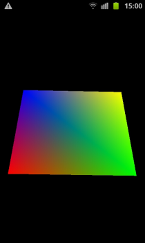

This example application makes use of the MoSync Sensor API and OpenGL API to graphically display the orientation of the device.
Note: This example only works properly on a physical device with an accelerometer. Currently only Android and iOS devices are supported, and no emulators.

This example is included in the MoSync SDK installation in the /OpenGLES/examples folder. For information on importing the examples into your workspace, see Importing the Examples.
When it is started on a suitable device, this application displays a quad (finite plane) tangential to the ground. The rectangle remains stationary regardless of changes to the orientation of the device. Use the Back button to close the application.
This example makes use of the Sensor API to collect data from the devices accelerometer, and makes use of the Open GL API to display graphically that data. The 3D rendering is done in a seperate module so if you dare you can try and plug in your own 3D renderer and see how your 3D world looks from different angles using the accelerometer. To do this you just implement the Renderer interface and the two functions init and render. Look at the default renderer implementation called SimpleRenderer to see how it is done.